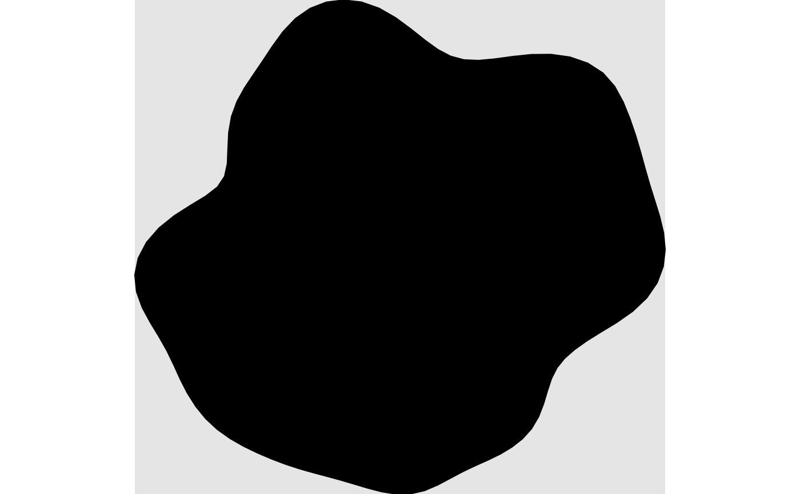

canvas bundles the settings draw() applies to a sketch as a whole,
before drawing any of its shapes: a background fill and an optional
fixed xlim/ylim frame. It plays the same role for sketch that
style() plays for a single drawable – a small, reusable settings
object, validated independently and stored as a property (sketch's own
canvas) rather than a flat list of arguments.
Arguments
- background
Background fill, drawn beneath every shape in the sketch. Either a plain colour string, or the output of a
fill_*()helper – seestyle()'sfillargument for the full family. Defaultfill_none()(no background drawn; the page's own background shows through, matchingdraw()'s behavior beforecanvasexisted).- xlim, ylim
Fixed axis limits, each a numeric vector of length 2, or
NULL(the default) to compute them from the sketch's own shapes at draw time, asdraw()already did beforecanvasexisted. An explicitxlim/ylimpassed todraw()itself always takes precedence over these.- clip
Whether to clip content to
xlim/ylim. Must be a single logical. DefaultFALSE– see Details.
Details
xlim/ylim only fix the coordinate scale draw() maps onto the
page – they do not, by themselves, clip content that falls outside that
range; a shape wider than its sketch's canvas still renders in full,
spilling past the frame, exactly as passing xlim/ylim to draw()
directly already behaves. This is a deliberate default: shapes built
from a noise_field/noise_bridge (e.g. shape_blob(), shape_twist())
can have somewhat unpredictable extents, and silently cropping part of
one away is a worse failure mode than a visibly overflowing shape, which
is an obvious cue to adjust the sketch's parameters. Set clip = TRUE to
opt into hard clipping at xlim/ylim instead – most useful once
background is also set to something other than fill_none(), since an
opaque background otherwise has visible content bleeding past its own
edge onto the bare page. clip has no visible effect when xlim/ylim
are both left NULL, since draw() then computes them from the
sketch's own shapes, which by construction never exceed that range.
Examples
canvas()
#> <sketchpad::canvas>
#> @ background: chr NA
#> @ xlim : NULL
#> @ ylim : NULL
#> @ clip : logi FALSE
canvas(background = "grey90")
#> <sketchpad::canvas>
#> @ background: chr "grey90"
#> @ xlim : NULL
#> @ ylim : NULL
#> @ clip : logi FALSE
# a background is drawn beneath every shape in the sketch
draw(sketch(canvas = canvas(background = "grey90")) + shape_blob(radius = 1))

# xlim/ylim alone only fix the coordinate scale -- a shape wider than the
# frame still overflows it
overflowing <- sketch(canvas = canvas(
background = "white", xlim = c(-1, 1), ylim = c(-1, 1)
)) + shape_circle(radius = 1.4)
draw(overflowing)
# clip = TRUE hard-clips content at xlim/ylim instead
overflowing@canvas@clip <- TRUE
draw(overflowing)